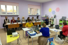

Муниципальное автономное дошкольное образовательное учреждение "Детский сад комбинированного вида № 15 "Сибирячок"
Тип организации – дошкольная образовательная организация.
Вид дошкольной образовательной организации - детский сад комбинированного вида.
Детский сад расположен: г. Канск, Северный микрорайон, д. 28
Маршрут проезда: от центра города автобусами №№ 3, 13, 24 до остановки «Универсам»; автобусами №№ 1, 10, 15, 17, 21, 22, 23 до остановки «Предмостная площадь».

Органом, осуществляющим функции и полномочия учредителя ДОУ, является:
Управление образования администрации г. Канска
Руководитель Управления образования г. Канска Боровский Эдуард Викторович
Адрес: ул. Кобрина, 26, г. Канск, Красноярский край, 663600
Телефон/факс: (39161) 3-25-59, E-mail: uo-kansk@yandex.ru
Дошкольный отдел: г. Канск, ул. Кобрина 26, каб. 2-10
Приемные дни: четверг, пятница с 8.00 до 16.00 ч.
Телефон: (39161) 3-54-83
Режим работы (пятидневный)
(регламентирован Уставом и Правилами внутреннего трудового распорядка):
Понедельник - пятница: с 7.00 до 19.00
Специализированные группы для детей с нарушением зрения: с 7.00 до 19.00
Предпраздничные дни: с 7.00 до 18.00
Суббота, воскресенье: Выходные дни
Дни приёма администрации: Вторник с 15.00 до 19.00
Адрес сайта: https://сибирячок.канск24.рф
Дата регистрации: 31 декабря 2013 год
Дата получения лицензии: 19 июня 2017 год
ИНН: 2450013042
ОГРН: 1022401360893